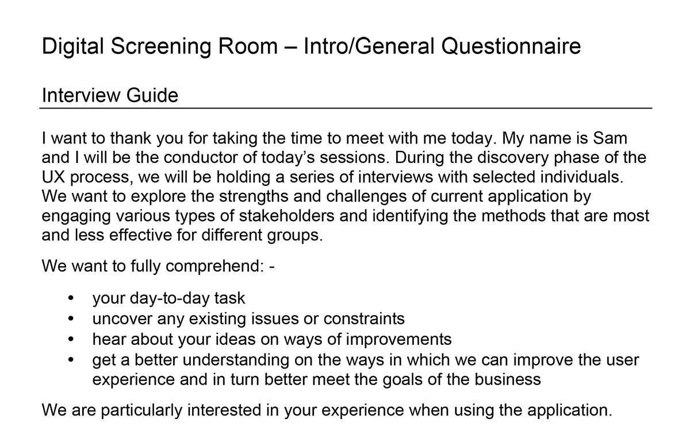

- Date: January 2013
- Roles: Engage, Analyze, Design
- Tools: Adobe InDesign, Adobe PDF, Rally (Agile Development)

" Application (Media Platform) "
Working with a very limited budget, under time sensitive constraints, and an antiquated back-end in need of upgrading, the requirement was the redesign and modernization of an internal tool for previewing upcoming TV shows, and new episodes or running shows. NBC partners and authorized merchants would then select the programs they wish to order and air on Airline Non-Theatrical, Global Networks, International Studios, NBC Network, The Late Night Shows and UPHE Acquisitions
Couple with the back-end hurdles, it was necessary that the redesign facilitated the needs of the eight unique user types, provided a better navigational flow and improved security features.
The solution needed to support personalization, flexibility and adaptability. My approach was to architect an interface that reflected all the feedback from the discovery phase while taking into account the unresolved back-end hurdles.
It was necessary to engage the 6 targeted business types over a two weeks period to conduct stakeholder interviews. The research and discovery phase would have provided concrete and in-depth information on all the issues within the current system. It was also necessary to have conversations with the engineers to understand the technical limitations, and fight for a back-end revamp.
The goal was to deliver a user-centered application, replacing an antiquated tool with a smart, modern and intuitive product.
The logic and flow for "login/forgot" password process was re-engineered to allow for easier user account management. After login, the system would serve a personalized experience of associated video content. The redesign provided a rich and modern search tool and other features for easily finding, tracking and viewing shows.
Some recommendations were a little ambitious and tabled for a later release due to the time and technical constraints. However, the simplified and improved user experience significantly increased the productivity of NBC's staff and partners. The changes solved 98% of the end user's complaints and offered tools and features not initially considered by the client. The UX team was consistently praised and congratulated with positive feedback.